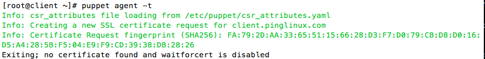
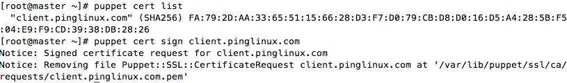
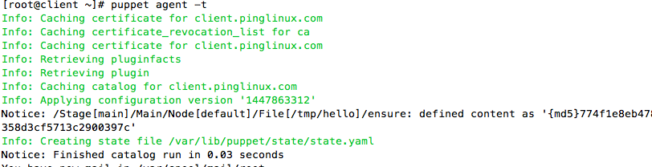

What is puppet ?
Puppet is the automation tool which makes configuration easy to perform in multiple survers without logging into each of them.i.e we work in the master node to implement the task in the client node.It was written in Ruby and uses Declarative Domain Specific Language
Puppet master and Puppet agent
Puppet master controls all the puppet node.The manifest, modules and classes are written in the master node and client node pulls it from master in every 30 min by default. We can run the command to make it implement instantly as well rather waiting for 30 mins.
Important Terms in Puppet
Manifest: Modules: Classes: Hiera Data: Facter:
Installation of Puppet master
Enable the Puppet Labs Package Repository. You can follow the steps from puppet officail website as well.Download puppet
$ sudo rpm -ivh https://yum.puppetlabs.com/puppetlabs-release-el-6.noarch.rpm
Download puppet
yum install puppet-server facter -y
service puppetmaster start
Open the following ports(8140,22,8141) which helps client to communicate with the master
iptables -I INPUT -p tcp -m tcp --dport 8140 -j ACCEPT
iptables -I INPUT -p tcp -m tcp --dport 8141 -j ACCEPT
iptables -I INPUT -p tcp -m tcp --dport 822 -j ACCEPT
Now save and restart the iptables
# service iptables save
# service iptables restartConfiguring the hostname
vi /etc/sysconfig/network
NETWORKING=yes HOSTNAME=master.pinglinux.com
The changes will take effect after you reboot the machine
Configuring the agent and master name in the hosts file
vi /etc/hosts
127.0.0.1 master.example.com localhost ... puppetagentip agent.example.com
Check weather puppet agent is reachable from master with the hostname
# ping agent.example.com
You should see the output 64 bytes from agent.example.com (ip_of_client): icmp_seq=1 ttl=64 time=1.50 ms
Make sure puppet master is running
# service puppetmaster status
puppet (pid 12345) is running....
Installation of Puppet client
Enable the Puppet Labs Package Repository. You can follow the steps from puppet officail website as well.Download puppet
$ sudo rpm -ivh https://yum.puppetlabs.com/puppetlabs-release-el-6.noarch.rpm
Download puppet
yum install puppet facter -y
service puppet startConfiguring the hostname
vi /etc/sysconfig/network
NETWORKING=yes HOSTNAME=client.pinglinux.com
The changes will take effect after you reboot the machine
Configuring the agent and master name in the hosts file
vi /etc/hosts
127.0.0.1 client.pinglinux.com localhost ... puppet_server_ip server.pinglinux.com
Check weather puppet server is reachable from client with the hostname
# ping server.example.com
You should see the output 64 bytes from agent.example.com (ip_of_server): icmp_seq=1 ttl=64 time=1.50 ms
Make sure puppet is running
# service puppet status
puppet (pid 12345) is running....
Add the following line under [main] section. server = master.pinglinux.com
Configuring our first agent
Puppet client connection to the puppet master(master.pinglinux.com
client# puppet agent --test --server=master.pinglinux.com --waitforcert=100
Info: Creating a new SSL certificate request for master.pinglinux.com Info: Certificate Request fingerprint (SHA256): 6F:0D:41:14:BD:2D:FC:CE:1C:DC:11:1E:26:07 :4C:08:D0:C7:E8:62:A5:33:E3:4B:8B:C6:28:C5:C8:88:1C:C8 Exiting; no certificate found and waitforcert is disabled
it has request the master for the approval of the connection. Login to the master and accept the connection.
[master~] # puppet cert list
Will show the the certificate waiting to be signed
"client.pinglinux.com"(SHA256) 6F:0D:41:14:BD:2D:FC:CE:1C:DC:11:1E:28:07:4C:08:D0:C7:E8:62:A3:33:E3:4B:8B:C6:29:C5:C8:88:1C:C9
[master~]# puppet cert sign client.pinglinux.com
[master~]# puppet cert sign --all
Now after master signing the certificate , you will see the follwing output on the client machine
[ client~] # puppet agent --test
Info: Retrieving plugin Info: Caching catalog for node1.pro-puppet.com Info: Applying configuration version '1365655737' Notice: Finished catalog run in 0.13 seconds
configuration in the Real Servers
Client
Server

Client

Certification Error
Stop puppetmaster and puppet in server and client machine. Perform following steps.
[master]# puppet cert clean --all [client]# rm -rf /var/lib/puppet/ssl/*
master# service puppetmaster start client# service puppet start
It will regenerate the new certificates
Configuration of puppet master and agent in AWS servers(ec2).Link here